TOP 10 Những Địa Điểm Du Lịch Mùa Thu Mà Bạn "Không Nên" Bỏ Qua
1. Bắc ÂuKhám phá Đan Mạch-Đất nước của sự hạnh phúc
Khi đến với Đan Mạch, bạn không nên bỏ qua Thủ đô Copenhagen, một trong những thành phố xanh nhất thế giới với nhiều công viên, vườn hoa, cây cối, người dân chủ yếu di chuyển bằng xe đạp, xe điện…Không chỉ vậy, ở Copenhagen còn là sự kết hợp hài hòa giữa các khu phố cổ, hệ thống kênh rạch chằng chịt, những ngôi nhà đầy màu sắc rực rỡ cùng với những công trình kiến trúc hiện đại. Nơi đây còn nổi tiếng với bức tượng Nàng Tiên Cá bên vịnh Oresund.

Ngoài Thủ đô Copenhagen, bạn còn có thể thăm thú một vài nơi vô cùng đẹp và thú vị như thị trấn cổ Old Towns ở Aarhus với những ngôi nhà nhỏ bằng gỗ, được mô phỏng theo kiến trúc nhà truyền thống Đan Mạch, bảo tàng đồng hồ, bảo tàng dệt may…, hay thưởng ngoạn vẻ đẹp như thiên đường ở thị trấn Bornholm, nơi mà sự bình yên thấm vào từng ngọn cỏ…

 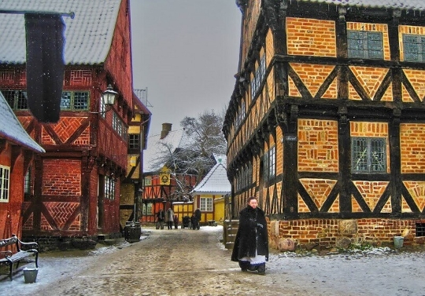
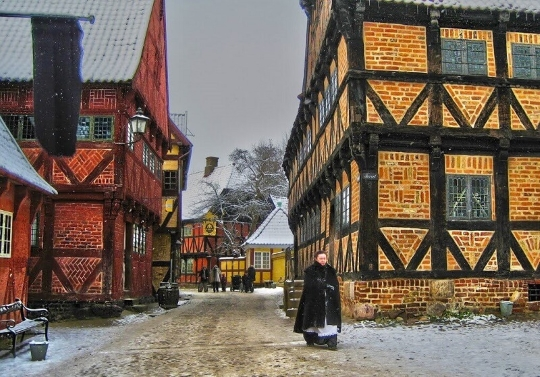
Khám phá thiên nhiên tuyệt đẹp ở Thụy Điển
Thủ đô Stockholm là một trong những địa điểm được nhiều du khách ghé thăm nhất khi đến Thụy Điển. Nơi đây có 1/3 diện tích là nước, có sự kết hợp giữa kênh đào, biển, công trình kiến trúc hiện đại và những ngôi nhà cổ hoàn toàn bằng đá được xây dựng từ thế kỷ 17, 18 tạo ra một cảnh quan vô cùng xinh đẹp, hài hòa giữa sự hiện đại và nét truyền thống lâu đời. Điều đó đã giúp thành phố này lọt top những thành phố du lịch đẹp, quyến rũ nhất thế giới.

Khi ghé thăm Thụy Điển, bạn có thể ghé qua tỉnh Skane với những cánh đồng màu mỡ, khu rừng rậm xanh mướt vô cùng cuốn hút, hay thăm thị trấn Visby với những kiến trúc độc đáo thời Trung cổ, Cung điện Drottingholm, trải nghiệm nhà thờ Lund nghìn năm tuổi...


Ngoài 2 đất nước xinh đẹp trên, bạn cũng có thể khám phá thêm một vài địa điểm thú vị khác: ngắm cực quang tuyệt đẹp ở Iceland, chiêm ngưỡng thiên nhiên hùng vĩ cũng như các di tích lịch sử lâu đời tại Na Uy, ghé thăm quê hương của ông già Noel và ngắm nhìn những công trình kiến trúc độc đáo, cổ kính tại Phần Lan…


Du lịch đến Đông Âu bạn có thể ghé thăm một trong những đất nước: Nga, Cộng hòa Séc, Bulgaria, Ba Lan, Hungary…để chiêm ngưỡng vẻ đẹp thiên nhiên, thời tiết dịu nhẹ dễ chịu.
Khám phá đất nước xinh đẹp Hungary
Đến Hungary bạn phải ghé qua thành phố Budapest – nàng thơ cổ tích của mùa thu châu Âu, hay “Nữ hoàng của sông Danube”, thành phố mang vẻ đẹp vừa dịu dàng vừa quý phái, đặc biệt là lúc mặt trời mọc, bạn sẽ không thể nào quên sự lung linh của thành phố khi những tia nắng đầu tiên chiếu rọi vào từng tòa nhà cổ kính.

Đất nước Bulgaria-thánh địa hoa hồng quyến rũ nhất thế giới
Nhắc đến Bulgaria, bạn thường nghĩ ngay đến thung lũng hoa hồng đầy sắc màu, tuy nhiên không chỉ vậy mà ở Bulgaria bạn còn có thể chiêm ngưỡng vẻ đẹp thiên nhiên cũng như nét cổ kính trong nghệ thuật kiến trúc. Những địa điểm nên đến tại Bulgaria vào mùa thu là dãy núi Rhodope và Stara Planina với bức tranh thiên nhiên đẹp nhất, tham gia lễ hội bí ngô ở thị trấn Sevlievo, tận hưởng và nghỉ dưỡng ở biển Đen với ít người hơn…

 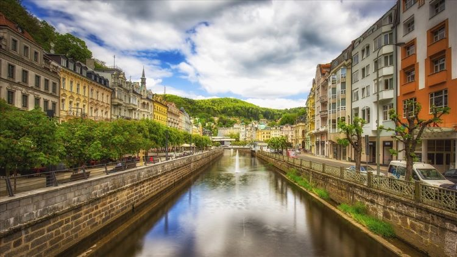
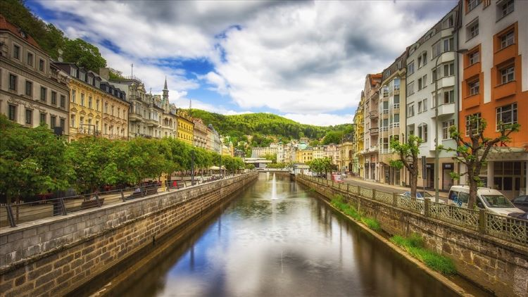

Khám phá Nga
Đến Nga, bạn nhất định phải ghé thăm Saint Petersburg, thành phố cổ kính nằm bên dòng Neva thơ mộng. Khung cảnh thành phố luôn khiến du khách choáng ngợp bởi những hàng bạch dương vàng rực trong nắng thu, những công viên rực rỡ sắc lá vàng, đỏ đầy mê hoặc. Một trong những địa điểm cần đến nữa đó là trái tim của nước Nga – thủ đô Moscow, nơi có rất nhiều cảnh đẹp, địa điểm du lịch nổi tiếng. Bạn có thể ghé thăm Quảng trường Đỏ, Nhà thờ lớn Saint Basil, Cung điện Kremlin, tìm hiểu kiến trúc, lịch sử nước Nga thời Trung cổ tại Golden Ring Moscow…
.jpg)
 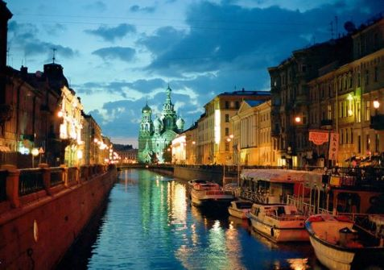
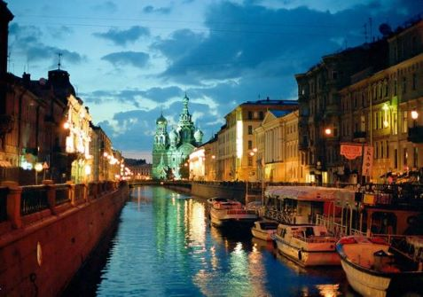
Cộng hòa Séc
Du lịch Cộng hòa Séc vào mùa thu là thời điểm lý tưởng nhất cho du khách muốn tham quan đất nước này, vì đây là thời điểm khí hậu vô cùng dễ chịu với nắng nhẹ, không khí ấm áp. Tham quan du lịch Prague – Thủ đô và là thành phố lớn nhất Cộng hòa Séc, thành phố mang trong mình vẻ đẹp cổ kính của lịch sử. Vào mùa thu Prague trở nên lộng lẫy hơn khi đất trời nhuộm màu lá vàng. Bạn có thể đi dạo ngắm nhìn thành phố cổ hay ngắm hoàng hôn trên đồi Castle, đó sẽ là một trải nghiệm khó quên. Cầu Charles, lâu đài Prague Castle cổ kính, nhà thờ thánh Vitus… cũng là một trong những điểm đến nổi tiếng khi nhắc đến Cộng hòa Séc.


Khi du lịch các nước Tây Âu bạn có thể ghé thăm những đất nước như Áo, Đức, Pháp, Luxembourg, Hà Lan, Bỉ…
Đức
Du lịch Tây Âu nhất định không được bỏ qua đất nước Đức xinh đẹp. Vào mùa thu, Đức khoác lên mình một màu vàng, đỏ của những cây sồi già và lá phong phủ khắp các lâu đài cổ kính. Đi dạo trên những con đường đầy lá vàng ở thủ đô Berlin hay thăm thú cảnh thiên nhiên ở những vùng làng quê, thử rượu ở các vùng trồng nho, tham gia lễ hội bia vào tháng 10, ghé thăm thành phố Munich sầm uất, cảm nhận sự pha trộn giữa nét cổ điển và hiện đại ở hồ Bodensee…sẽ là một trong những ký ức khó quên của du khách khi đến đất nước xinh đẹp này.
 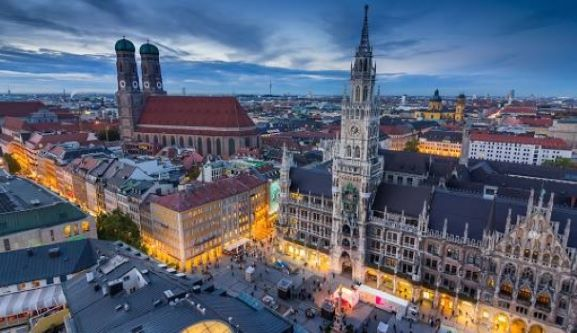
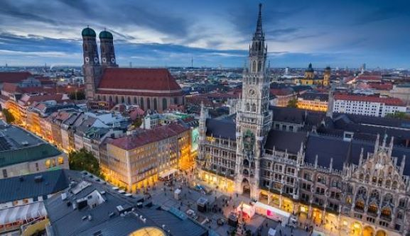
Áo
Thủ đô Vienna ở Áo sẽ là một trong những điểm đến không thể bỏ qua khi du lịch châu Âu mùa thu cho những ai yêu thích nghệ thuật, bạn sẽ cảm nhận được rõ không khí của một thành phố âm nhạc cổ điển tại nơi đây khi dạo quanh những phòng trưng bày nghệ thuật, quảng trường cổ, những tòa nhà nổi tiếng xinh đẹp như: Rathaus, Cung điện Hofburg, Bảo tàng lịch sử tự nhiên… Ngoài ra, tham quan Cung điện Schonbrunn, khám phá thiên nhiên mùa thu yên bình ở Ahornboden…cũng sẽ mang đến những trải nghiệm đáng nhớ cho du khách khi đến nơi đây.
 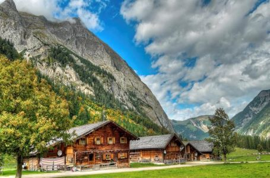
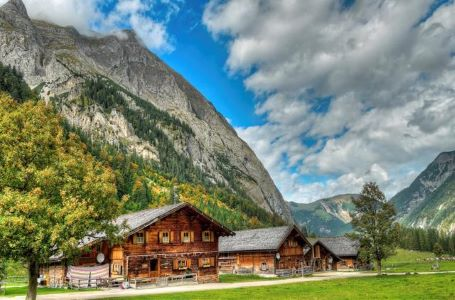
Pháp và “trái tim xanh” của châu Âu
Nhắc đến Pháp, ai cũng sẽ nghĩ ngay đến đất nước của tình yêu, và khi mùa thu đến, người ta mới cảm nhận sâu sắc hơn sự lãng mạn, ngọt ngào đó. Khi đến Pháp, chúng ta không thể bỏ qua thủ đô Paris, mùa thu ở Paris mang một vẻ đẹp vô cùng lãng mạn. Bạn có thể đi dạo dưới những hàng cây của khu vườn Luxembourg vàng óng, ngắm nhìn sông Seine êm dịu, dạo chơi ở lâu đài Versailles, tham gia lễ hội Đêm trắng, lễ hội rượu vang…Đó sẽ là những trải nghiệm đáng nhớ khi đến Pháp.


Luxembourg
Vào mùa thu, Công quốc Luxembourg nhỏ bé ngập tràn trong gam màu vàng, đỏ tuyệt đẹp. Bạn có thể dễ dàng đi du lịch khám phá xung quanh, cho dù là trong thành phố sôi động hay các vùng nông thôn, thị trấn nhỏ bé thì Luxembourg vẫn luôn đẹp như tranh vẽ. Một vài địa điểm bạn nên ghé qua tại nơi đây đó là Bảo tàng Lịch sử và Nghệ thuật Quốc gia, các bức tường của Corniche, Lâu đài Bourscheid, Quảng trường Guillaume II…


Khi du lịch khám phá Nam Âu bạn có thể ghé thăm Tây Ban Nha, Bồ Đào Nha, Ý, Hy Lạp, Serbia…
Tây Ban Nha
Xứ sở Bò tót – Tây Ban Nha sẽ không làm bạn thất vọng khi đến khám phá tại đất nước này. Một trong những thành phố nổi tiếng nhất đó là Barcelona, thành phố với những lễ hội luôn làm cho không khí nơi đây trở nên náo nhiệt. Đến đây vào mùa thu bạn sẽ có cơ hội tham gia lễ hội La Merce - bữa tiệc đường phố lớn nhất ở Barcelona, bạn có thể hòa nhập vào dòng người dưới đường phố để cảm nhận nhịp điệu sôi động của lễ hội hoặc cũng có thể ngắm nhìn toàn cảnh lễ hội từ một vị trí trên cao. Ngoài ra thì bảo tàng Picasso, lâu đài Palau Guell… cũng là một trong những địa điểm lý tưởng cho việc tham quan khám phá nơi đây.


Bồ Đào Nha
Du lịch Bồ Đào Nha bạn không thể bỏ qua thành phố Algarve với những bãi biển xanh rờn, lãng mạn để tận hưởng một mùa thu châu Âu xanh mát. Hay thành phố Porto – thành phố đẹp nhất ở Bồ Đào Nha. Bạn có thể tận hưởng vẻ đẹp của dòng sông Douro, ngắm nhìn thành phố từ trên cao, tham quan nhà thờ Igrejo do Carmo với nét kiến trúc từ thế kỷ 18…

 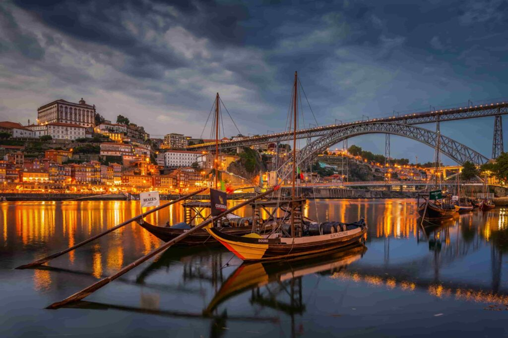
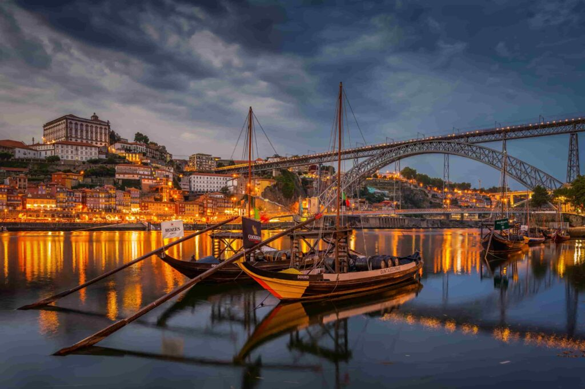
Ý
Mùa thu ở Ý mang lại vẻ đẹp vừa lãng mạn, vừa ngọt ngào khiến ai cũng say đắm. Đến Ý, bạn có thể ghé thăm thành phố Rome với bề dày lịch sử lâu đời, ngắm nhìn Quảng trường La Mã hay Đấu trường La Mã Colosseum như một biểu tượng của nước Ý. Ngoài Rome thì Venice cũng là một trong những thành phố thu hút nhiều lượt tham quan của du khách. Đến đây, du khách có thể có những cuộc du ngoạn bằng thuyền thú vị, thành phố Venice nổi tiếng thơ mộng với kênh đào Grand, dọc hai bên bờ kênh là những công trình kiến trúc cổ điển, làm tăng thêm nét duyên dáng cho thành phố.
Hy Lạp
Đến Hy Lạp, bạn có thể ghé qua những địa điểm nổi tiếng như thành phố cổ lớn nhất Hy Lạp – Thủ đô Athens, nơi có niên đại khoảng 3000 năm, được xem là cái nôi của nền văn minh phương Tây. Du khách có thể chiêm ngưỡng vẻ đẹp cổ kính, đồ sộ và diễm lệ của các công trình kiến trúc, tìm hiểu các di tích lịch sử như hệ thống đền đài Agora cổ đại, Acropolis, đền thờ Thần Zeus…Ngoài ra, bạn cũng có thể tham quan mua sắm tại thành phố Thessalonik sầm uất…
 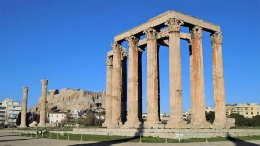
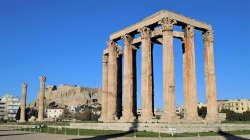